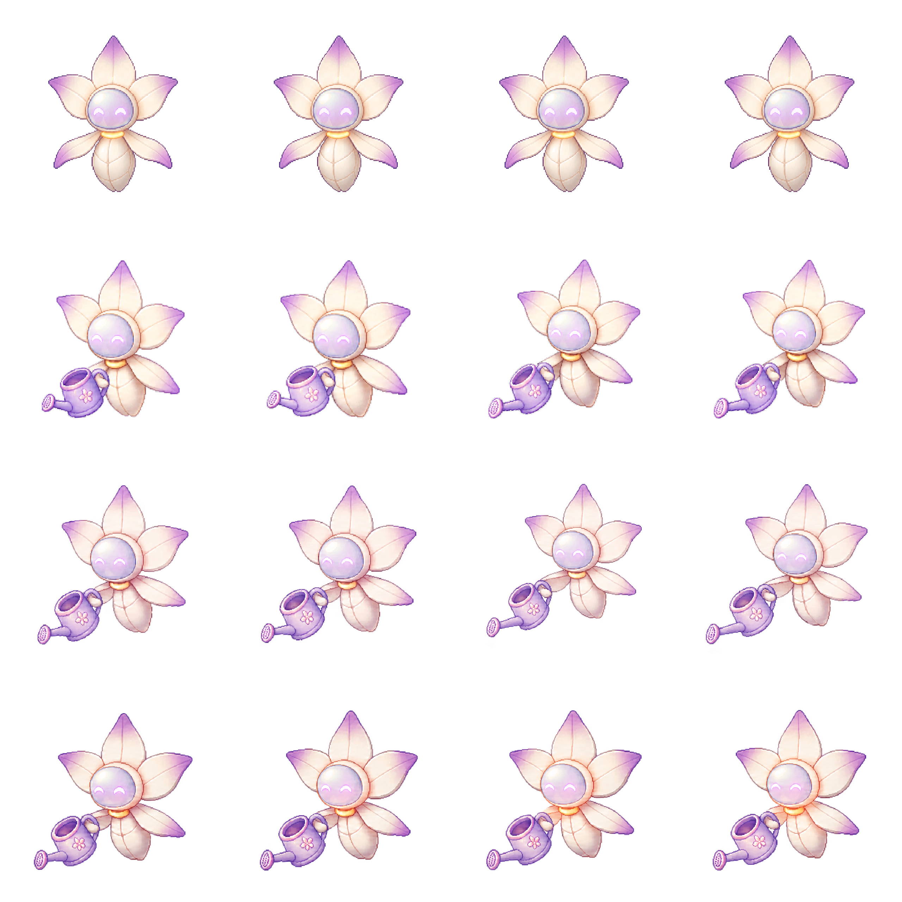

lia_loading_16f.png
- Biblioteca
public/assets/gvo/shared/lia/current-used/carga-inicial/lia_loading_16f.png- Original
public/assets/runtime/loading-initial/lia/lia_loading_16f.png- Origen
- Carga Inicial, rutas
/y/carga. - Observacion
- Spritesheet 4x4 de riego; util para timing/frame registration, no para identidad principal.